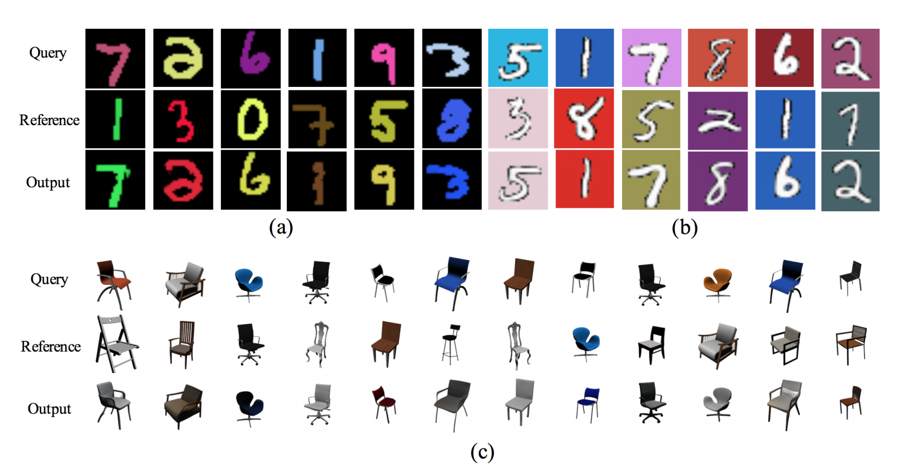
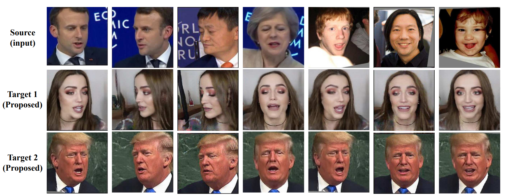
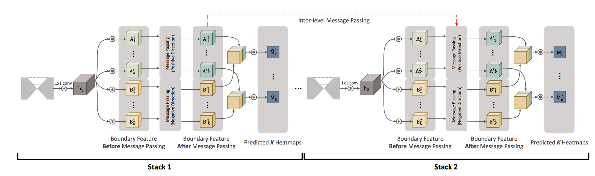
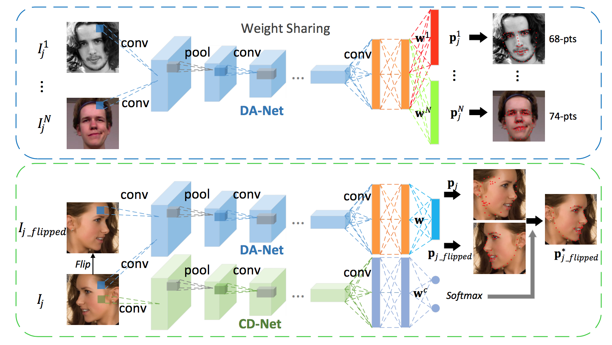

Wayne Wu
吳文巖
About Me
|
I am currently a visiting scholar in MMLab Singapore, Nanyang Technological University, supervised by Prof. Chen Change Loy. I am a fourth year Ph.D candidate in BNRist Lab, Department of Computer Science and Technology, Tsinghua University. Also, I am a Research Intern at SenseTime Research, working closely with Chen Qian and Cheng Li. My research interests lie at the intersection of Computer Vision, Augmented Reality and Machine Learning, especially Generative Model and Facial Animation. I used to work with Prof. Zhoujun Li during Sep. 2013 to Jun. 2014. |
News
- We are recruiting interns / full-time researchers in computer vision at SenseTime Research (Beijing/Shanghai/Hangzhou). If you are interested in, please send your CV to my email.
- The Celebrity Video Dataset (CelebV) are publicly available now. (2019-06-12)
- Our paper DisentanglingConSty is accepted to ICLR 2019 Workshop. (2019-04-20)
- Our paper TransGaGa is accepted to CVPR 2019. (2019-03-02)
- The Testing Code and Models of LAB are publicly available now. (2018-07-26)
- The Wider Facial Landmarks in-the-wild Dataset (WFLW) are publicly available now. (2018-07-15)
- Our paper ReenactGAN is accepted to ECCV 2018. (2018-07-10)
- Our team won the WebVision Challenge 2018 as first runner-up. (2018-06-20)
- Our paper LAB is accepted to CVPR 2018. (2018-02-26)
- Our paper DVLN is accepted to CVPR 2017 Workshop. (2017-05-10)
Publication
 |
TransGaGa: Geometry-Aware Unsupervised Image-to-Image TranslationWayne Wu, Kaidi Cao, Cheng Li, Chen Qian, Chen Change Loy. IEEE Conference on Computer Vision and Pattern Recognition (CVPR), 2019. [Paper] [Project Page] |
|  |
Disentangling Content and Style via Unsupervised Geometry DistillationWayne Wu, Kaidi Cao, Cheng Li, Chen Qian, Chen Change Loy. International Conference on Learning Representations (ICLR) Workshop, 2019. [Paper] [Project Page] |
|  |
ReenactGAN: Learning to Reenact Faces via Boundary TransferWayne Wu*, Yunxuan Zhang*, Cheng Li, Chen Qian, Chen Change Loy. European Conference on Computer Vision (ECCV), 2018. (* indicates equal contribution.) [Paper] [Project Page] [Code and Model] |
|  |
Look at Boundary: A Boundary-Aware Face Alignment AlgorithmWayne Wu, Chen Qian, Shuo Yang, Quan Wang, Yici Cai, Qiang Zhou. IEEE Conference on Computer Vision and Pattern Recognition (CVPR), 2018. [Paper] [Project Page] [Code and Model] |
|  |
Leveraging Intra and Inter-Dataset Variations for Robust Face AlignmentWayne Wu, Shuo Yang. IEEE Conference on Computer Vision and Pattern Recognition (CVPR) Workshop, 2017. [Paper] [Project Page] |
Academic Services
- Reviewer for CVPR 2019, ICCV 2019
Teaching
- 2017, Spring. Numrical Analysis, THU
- 2016, Spring. Combinatorial Mathematics, THU
- 2014, Spring. Discrete Mathematics, BUAA
Selected Honors and Awards
- Excellent Undergraduate Student in Beijing, 2015
- Outstanding Undergraduate Thesis, 2015
- National Scholarship (top 1%), 2014.